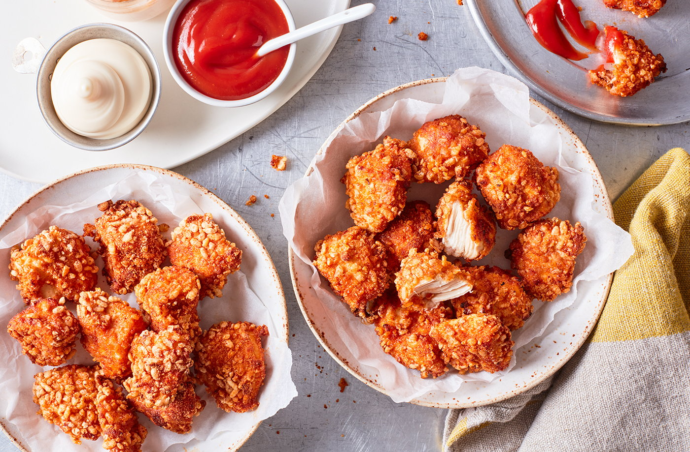

ChickenBites

Leckere HähnchenBites aus dem Ofen
Paniertes Hähnchen im Ofen.
Spicy, lecker und schnell
Zutaten
- 2 Hähnchenbrüste
- Siracha Sauce
- Mayonnaise
- Panko Mehl
- Pfeffer, Salz, sonstige Gewürze nach Geschmack
- Die Hähnchenbrust in ca 2*2cm große Stücke schneiden
- 2TL Sirracha Sauche mit 4-6TL Mayonnaise mischen und würzen
- Das Hähnchen in der Mischung marinieren
- Das Hähnchen in Pankomehl wenden
- Das panierte Hähnchen auf ein Backblech legen und bei 200°C Umluft 14-20 Minuten im Ofen backen